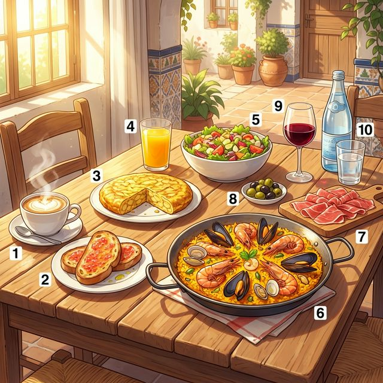
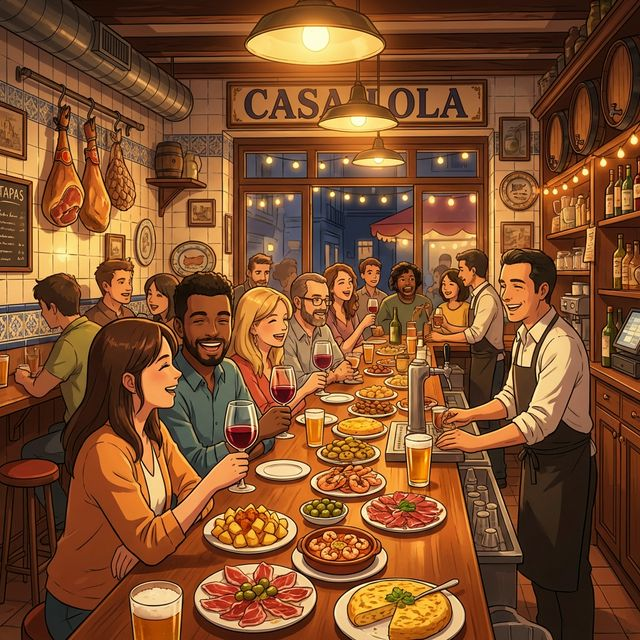

Cervantes: §5 Alimentación: 음식, 음료 명칭 및 레스토랑에서의 기본 표현
¡Buen provecho! (맛있게 드세요!)
스페인어로 '먹는 것'은 단순히 영양을 섭취하는 행위를 넘어, 삶의 기쁨과 사교의 중심입니다. 이번 장에서는 다양한 스페인 음식과 음료의 명칭을 배우고, 레스토랑에서 음식을 주문하거나 선호를 표현하는 방법을 익힙니다. 스페인의 독특한 타파스(Tapas) 문화와 식사 시간의 비밀도 함께 알아봅시다.
학습 목표
따스한 햇살이 비치는 테라스의 풍성한 식탁입니다. 번호와 매칭되는 단어를 확인하며 맛있는 스페인 어휘를 익혀보세요.

| # | Spanish | English Bridge | Korean Tip |
|---|---|---|---|
| 1 | el café con leche | Coffee with Milk | 카페라떼와 유사한 밀크 커피 |
| 2 | el pan con tomate | Pan (→ Bread) with Tomato | 카탈루냐식 토마토 빵 |
| 3 | la tortilla de patatas | Tortilla (Omelet) of Potatoes | 스페인식 감자 오믈렛 |
| 4 | el zumo de naranja | Juice (zumo) of Orange | 오렌지 주스 |
| 5 | la ensalada mixta | Ensalada (→ Salad) Mixed ✅ | 모둠 샐러드 |
| 6 | la paella de marisco | Seafood Paella | 해산물 파에야 |
| 7 | el jamón ibérico | Ham (Jamón) - Iberico ✅ | 이베리코 하몽 (생햄) |
| 8 | las aceitunas | — | 올리브 (절임) |
| 9 | el vino tinto | Wine (Vino) Tint (Red color) | 레드 와인 |
| 10 | el agua mineral | Water Mineral ✅ | 미네랄 워터 (생수) |
✅ 표시된 단어는 영어와 어원이 같거나 매우 유사한 'Cognates'입니다.
레스토랑에서 음식을 주문하고 계산할 때 사용하는 핵심적인 패턴입니다.
A. 주문하기 (Ordering)
B. 선호 표현 및 계산 (Preference & Check)
음식 주문과 선호 표현에 필수적인 불규칙 동사 'querer'와 'preferir'를 배웁니다.
이 동사는 주어에 따라 어간의 'e'가 'ie'로 변하는 불규칙 동사입니다. (Nosotros, vosotros 제외)
| 주어 | Querer (Presente) | 의미 |
|---|---|---|
| yo | quiero | 나는 원한다 |
| tú | quieres | 너는 원한다 |
| él/ella/usted | quiere | 그/그녀/당신은 원한다 |
| nosotros/as | queremos | 우리는 원한다 |
| vosotros/as | queréis | 너희는 원한다 |
| ellos/ellas/ustedes | quieren | 그들/당신들은 원한다 |
'Querer'와 마찬가지로 어간의 'e'가 'ie'로 변합니다. 영어의 'prefer'와 대응되지만 변화형에 주의하세요.
| 주어 | Preferir (Presente) | 의미 |
|---|---|---|
| yo | prefiero | 나는 선호한다 |
| tú | prefieres | 너는 선호한다 |
| él/ella/usted | prefiere | 그/그녀/당신은 선호한다 |
| nosotros/as | preferimos | 우리는 선호한다 |
| vosotros/as | preferís | 너희는 선호한다 |
| ellos/ellas/ustedes | prefieren | 그들/당신들은 선호한다 |
Korean Tip!
두 동사 모두 뒤에 명사(물건)나 동사 원형(행위)이 올 수 있습니다.
예: Quiero comer (먹고 싶다), Quiero una manzana (사과 하나를 원한다).
스페인 미식 문화의 꽃, 타파스(Tapas)를 즐기는 법을 소개합니다.

Ir de tapas no es solo comer, es una actividad social. Una tapa es una pequeña porción de comida que se sirve con una bebida. Dice la leyenda que el rey Alfonso X el Sabio ordenó servir comida con el vino para evitar que el alcohol subiera rápido a la cabeza. Hoy en día, es una forma de vida en ciudades como Madrid, Sevilla o Granada.
A los españoles les gusta "tapear" o "picar". Van de bar en bar, toman una caña (cerveza pequeña) o un chato (vaso de vino) y prueban una tapa diferente en cada lugar. En algunas ciudades, como Granada, ¡la tapa es gratis con la bebida! Las tapas más clásicas son las patatas bravas, los calamares fritos, el queso manchego y, por supuesto, el jamón ibérico. Es el momento perfecto para charlar con los amigos y disfrutar del ambiente.
[한국어 번역]
'타파스를 먹으러 가는 것'은 단순한 식사가 아니라 하나의 사회적 활동입니다. **타파스(tapa)**는 음료와 함께 제공되는 소량의 음식입니다. 전설에 따르면 현왕 알폰소 10세가 술 기운이 머리로 빨리 올라오는 것을 막기 위해 와인과 함께 음식을 내라고 명령했다고 합니다. 오늘날 이것은 마드리드, 세비야, 그라나다와 같은 도시에서 하나의 삶의 방식입니다.
스페인 사람들은 '타파스를 먹는 것(tapear)' 혹은 '조금씩 집어 먹는 것(picar)'을 좋아합니다. 그들은 바(bar)를 옮겨 다니며 '카냐(caña, 작은 맥주)'나 '차토(chato, 와인 한 잔)'를 마시고, 가는 곳마다 다른 타파스를 맛봅니다. 그라나다 같은 일부 도시에서는 음료를 시키면 타파스가 공짜입니다! 가장 고전적인 타파스로는 파타타스 브라바스, 오징어 튀김, 만체고 치즈, 그리고 당연히 이베리코 하몽이 있습니다. 친구들과 이야기를 나누고 분위기를 즐기기에 완벽한 순간입니다.
A. Match the word (알맞은 단어를 연결하세요)
| Spanish | English / Korean |
|---|---|
| 1. El zumo | a. Water |
| 2. El pan | b. Juice |
| 3. El agua | c. Cheese |
| 4. El queso | d. Bread |
| 5. El jamón | e. Ham |
B. Fill in the blanks with the correct form of 'querer' or 'preferir' (알맞은 변화형을 쓰세요)
C. 번역 연습 (주어진 상황에 맞게 번역하세요)
Una cena en Madrid (마드리드에서의 저녁 식사)
Hoy es viernes y Diego cena con sus amigos en un restaurante del centro de Madrid. Ellos no tienen mucha hambre, por eso prefieren comer tapas para compartir. Diego quiere patatas bravas y una tortilla de patatas. Su amiga Elena prefiere algo de pescado, así que pide calamares fritos. Para beber, todos quieren una caña de cerveza muy fría. El camarero es muy simpático y trae la comida rápido. "Todo está riquísimo," dice Elena. Al final, Diego pide la cuenta y paga con tarjeta.
Questions:
[한국어 번역]
오늘은 금요일이고 디에고는 마드리드 중심가의 레스토랑에서 친구들과 저녁을 먹습니다. 그들은 배가 많이 고프지 않아서 나눠 먹을 수 있는 타파스를 먹기로 선호합니다. 디에고는 파타타스 브라바스와 감자 오믈렛을 원합니다. 그의 친구 엘레나는 생선 요리를 선호해서 오징어 튀김을 주문합니다. 마실 것으로는 모두가 아주 시원한 생맥주(caña) 한 잔을 원합니다. 웨이터는 매우 친근하고 음식을 빨리 가져다줍니다. "모든 게 정말 맛있어," 엘레나가 말합니다. 마지막에 디에고는 계산서를 요청하고 카드로 결제합니다.
En el restaurante "La Solana" (레스토랑 "라 솔라나"에서)
Situación: Carlos y su amiga coreana Ji-won están en un restaurante típico español. Ji-won está aprendiendo a pedir comida en español.
상황: 카를로스와 그의 한국인 친구 지원이가 전형적인 스페인 레스토랑에 있습니다. 지원이는 스페인어로 음식 주문하는 법을 배우고 있습니다.
| Spanish | Korean |
|---|---|
| Camarero: ¡Buenas noches! ¿Tienen una reserva? | 웨이터: 안녕하세요! 예약하셨나요? |
| Carlos: Sí, a nombre de Carlos. Para dos personas. | 카를로스: 네, 카를로스라는 이름으로요. 두 명입니다. |
| Camarero: Muy bien. Pasen por aquí, por favor. | 웨이터: 좋습니다. 이쪽으로 오세요. |
| Ji-won: Carlos, ¿qué me recomiendas? | 지원: 카를로스, 무엇을 추천하니? |
| Carlos: La paella aquí es excelente. ¿Quieres probarla? | 카를로스: 여기 파에야가 훌륭해. 먹어볼래? |
| Ji-won: ¡Sí, claro! Para mí, paella de marisco, por favor. | 지원: 응, 물론이지! 저는 해산물 파에야로 주세요. |
| Camarero: ¿Y para beber? ¿Quieren vino o agua? | 웨이터: 마실 것은요? 와인을 원하세요, 아니면 물을 원하세요? |
| Ji-won: Yo prefiero agua mineral sin gas. | 지원: 저는 탄산 없는 미네랄 워터를 선호해요. |
| Carlos: Para mí, una copa de vino tinto de la casa. | 카를로스: 저는 하우스 레드 와인 한 잔 주세요. |
| Camarero: Muy bien. Enseguida les traigo todo. | 웨이터: 알겠습니다. 곧 모든 것을 가져다 드릴게요. |
이번 장의 핵심 내용을 복습해 보세요.
¡Fantástico! 이번 장을 통해 여러분은 스페인 여행의 가장 큰 즐거움 중 하나인 '미식'을 즐길 준비를 마쳤습니다. 음식을 주문하고 자신의 취향을 당당하게 말하는 것만으로도 여러분의 고생한 공부가 빛을 발할 것입니다. "La cuenta, por favor" 한 마디로 멋지게 식사를 마무리하는 여러분의 모습을 상상해 보세요. 다음 장에서는 우리가 편히 쉴 수 있는 공간인 '집(Mi Casa)'에 대해 배워보겠습니다. ¡Hasta la próxima y buen provecho!
6. Práctica - A. Match the word
1-b, 2-d, 3-a, 4-c, 5-e
6. Práctica - B. Fill in the blanks
6. Práctica - C. 번역 연습
7. Lectura Questions